8. Evaluación#
import joblib
import pandas as pd
import time
import numpy as np
import matplotlib.pyplot as plt
import seaborn as sns
from sklearn.metrics import (
roc_auc_score, f1_score, recall_score, accuracy_score,
roc_curve, confusion_matrix, classification_report
)
# Cargar tus datos de prueba
# (deben ser los originales, sin balanceo)
X_train = pd.read_csv("X_train_resampled.csv")
y_train = pd.read_csv("y_train_resampled.csv")['diabetes']
X_test = pd.read_csv("X_test.csv")
y_test = pd.read_csv("y_test.csv")['diabetes']
def evaluar_modelo(nombre_modelo, ruta_pkl, X_test, y_test, X_train, y_train):
modelo = joblib.load(ruta_pkl)
start_time = time.time()
modelo.fit(X_train, y_train)
train_time = time.time() - start_time
train_score = modelo.score(X_train, y_train)
test_score = modelo.score(X_test, y_test)
# Predicciones
y_pred = modelo.predict(X_test)
try:
y_proba = modelo.predict_proba(X_test)[:, 1]
except:
# Algunos modelos no tienen predict_proba (como LinearSVC)
y_proba = None
# Métricas
auc = roc_auc_score(y_test, y_proba) if y_proba is not None else np.nan
f1 = f1_score(y_test, y_pred)
recall = recall_score(y_test, y_pred)
acc = accuracy_score(y_test, y_pred)
print(f"\n🔹 Modelo: {nombre_modelo}")
print(f"AUC: {auc:.3f} | F1: {f1:.3f} | Recall: {recall:.3f} | Accuracy: {acc:.3f} | Train Score: {train_score} | Test Score: {test_score} | Train Time: {train_time:.2f} s")
print("\nClassification Report:")
print(classification_report(y_test, y_pred))
# Matriz de confusión
cm = confusion_matrix(y_test, y_pred)
sns.heatmap(cm, annot=True, fmt='d', cmap='Blues')
plt.title(f"Matriz de Confusión - {nombre_modelo}")
plt.xlabel("Predicción")
plt.ylabel("Real")
plt.show()
# Curva ROC
if y_proba is not None:
fpr, tpr, _ = roc_curve(y_test, y_proba)
plt.plot(fpr, tpr, label=f"AUC = {auc:.3f}")
plt.plot([0, 1], [0, 1], 'k--', lw=1)
plt.title(f"Curva ROC - {nombre_modelo}")
plt.xlabel("Tasa de falsos positivos")
plt.ylabel("Tasa de verdaderos positivos")
plt.legend()
plt.show()
return {'Modelo': nombre_modelo, 'AUC': auc, 'F1': f1, 'Recall': recall, 'Accuracy': acc,'Train Score':train_score, 'Test Score': test_score, 'Train Time (s)': train_time}
Modelo de Regresión Logística L1 y L2#
resultados_finales = []
resultados_finales.append(evaluar_modelo("Regresión Logística", "modelo_logistica.pkl", X_test, y_test, X_train, y_train))
🔹 Modelo: Regresión Logística
AUC: 0.788 | F1: 0.409 | Recall: 0.708 | Accuracy: 0.719 | Train Score: 0.7801078490113841 | Test Score: 0.7185111918053222 | Train Time: 9.08 s
Classification Report:
precision recall f1-score support
0 0.94 0.72 0.82 63661
1 0.29 0.71 0.41 10143
accuracy 0.72 73804
macro avg 0.61 0.71 0.61 73804
weighted avg 0.85 0.72 0.76 73804
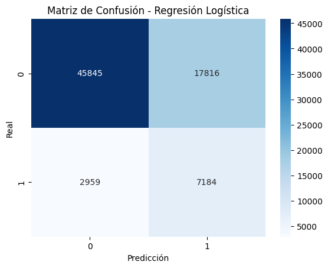
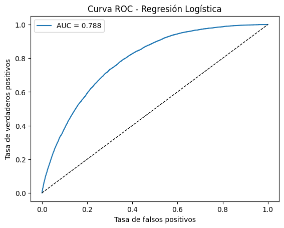
Modelo de KNN_NeighborsClassifier#
resultados_finales.append(evaluar_modelo("KNN", "modelo_knn.pkl", X_test, y_test, X_train, y_train))
🔹 Modelo: KNN
AUC: 0.748 | F1: 0.374 | Recall: 0.697 | Accuracy: 0.680 | Train Score: 0.9996903211907824 | Test Score: 0.6799089480244973 | Train Time: 1.94 s
Classification Report:
precision recall f1-score support
0 0.93 0.68 0.78 63661
1 0.26 0.70 0.37 10143
accuracy 0.68 73804
macro avg 0.59 0.69 0.58 73804
weighted avg 0.84 0.68 0.73 73804
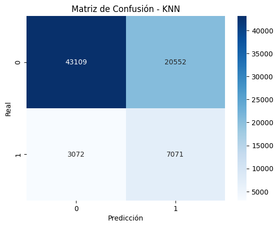
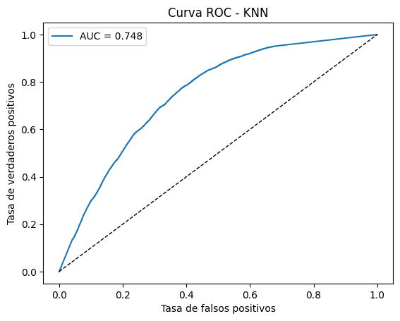
Modelo de Naive Bayes#
resultados_finales.append(evaluar_modelo("Naive Bayes", "modelo_nb.pkl", X_test, y_test, X_train, y_train))
🔹 Modelo: Naive Bayes
AUC: 0.739 | F1: 0.315 | Recall: 0.834 | Accuracy: 0.502 | Train Score: 0.6922297547478474 | Test Score: 0.5020595089697035 | Train Time: 2.11 s
Classification Report:
precision recall f1-score support
0 0.94 0.45 0.61 63661
1 0.19 0.83 0.32 10143
accuracy 0.50 73804
macro avg 0.57 0.64 0.46 73804
weighted avg 0.84 0.50 0.57 73804
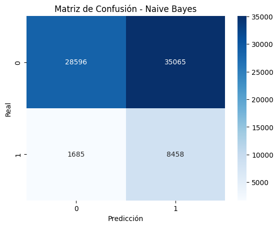
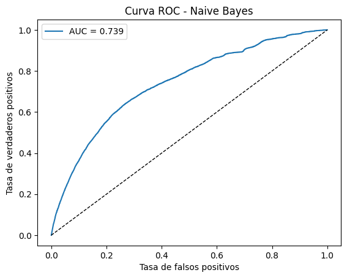
Modelo de DecisionTreeClassifier#
resultados_finales.append(evaluar_modelo("Árbol de Decisión", "modelo_tree.pkl", X_test, y_test, X_train, y_train))
🔹 Modelo: Árbol de Decisión
AUC: 0.751 | F1: 0.377 | Recall: 0.630 | Accuracy: 0.713 | Train Score: 0.7793269198403134 | Test Score: 0.7134166169855293 | Train Time: 5.56 s
Classification Report:
precision recall f1-score support
0 0.93 0.73 0.81 63661
1 0.27 0.63 0.38 10143
accuracy 0.71 73804
macro avg 0.60 0.68 0.60 73804
weighted avg 0.83 0.71 0.75 73804
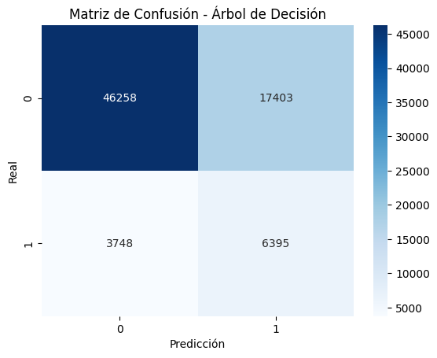
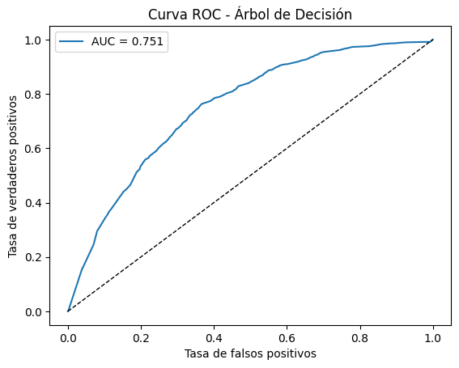
Modelo de RandomForestClassifier#
resultados_finales.append(evaluar_modelo("Random Forest", "modelo_rf.pkl", X_test, y_test, X_train, y_train))
🔹 Modelo: Random Forest
AUC: 0.794 | F1: 0.380 | Recall: 0.381 | Accuracy: 0.829 | Train Score: 0.9996903211907824 | Test Score: 0.8292910953335862 | Train Time: 205.04 s
Classification Report:
precision recall f1-score support
0 0.90 0.90 0.90 63661
1 0.38 0.38 0.38 10143
accuracy 0.83 73804
macro avg 0.64 0.64 0.64 73804
weighted avg 0.83 0.83 0.83 73804
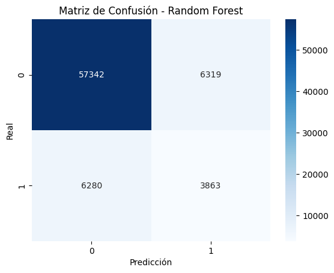
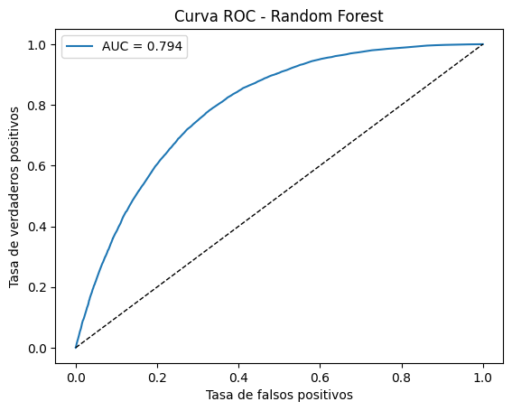
Modelo de XGBClassifier#
resultados_finales.append(evaluar_modelo("XGBoost", "modelo_xgb.pkl", X_test, y_test, X_train, y_train))
🔹 Modelo: XGBoost
AUC: 0.808 | F1: 0.308 | Recall: 0.230 | Accuracy: 0.858 | Train Score: 0.9284372664786154 | Test Score: 0.85807002330497 | Train Time: 7.06 s
Classification Report:
precision recall f1-score support
0 0.89 0.96 0.92 63661
1 0.47 0.23 0.31 10143
accuracy 0.86 73804
macro avg 0.68 0.59 0.61 73804
weighted avg 0.83 0.86 0.84 73804
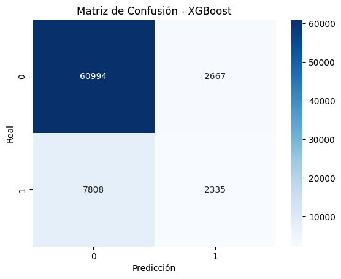
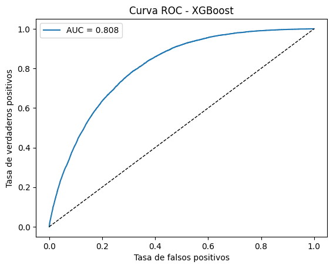
Modelo de LinearSVC#
resultados_finales.append(evaluar_modelo("Linear SVC", "modelo_svm.pkl", X_test, y_test, X_train, y_train))
🔹 Modelo: Linear SVC
AUC: 0.789 | F1: 0.411 | Recall: 0.709 | Accuracy: 0.721 | Train Score: 0.7792764287301149 | Test Score: 0.7208145899951223 | Train Time: 10.73 s
Classification Report:
precision recall f1-score support
0 0.94 0.72 0.82 63661
1 0.29 0.71 0.41 10143
accuracy 0.72 73804
macro avg 0.61 0.72 0.61 73804
weighted avg 0.85 0.72 0.76 73804
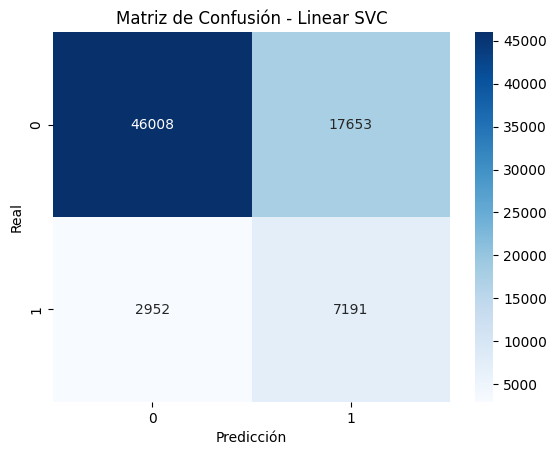
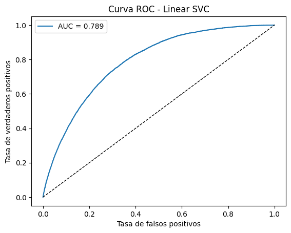
Tabla Comparativa modelos validados#
df_comparativa = pd.DataFrame(resultados_finales).sort_values(by='AUC', ascending=False)
display(df_comparativa)
| Modelo | AUC | F1 | Recall | Accuracy | Train Score | Test Score | Train Time (s) | |
|---|---|---|---|---|---|---|---|---|
| 5 | XGBoost | 0.807580 | 0.308353 | 0.230208 | 0.858070 | 0.928437 | 0.858070 | 7.058608 |
| 4 | Random Forest | 0.794302 | 0.380123 | 0.380854 | 0.829291 | 0.999690 | 0.829291 | 205.036462 |
| 6 | Linear SVC | 0.788576 | 0.411067 | 0.708962 | 0.720815 | 0.779276 | 0.720815 | 10.728178 |
| 0 | Regresión Logística | 0.788125 | 0.408844 | 0.708272 | 0.718511 | 0.780108 | 0.718511 | 9.082000 |
| 3 | Árbol de Decisión | 0.751294 | 0.376830 | 0.630484 | 0.713417 | 0.779327 | 0.713417 | 5.555804 |
| 1 | KNN | 0.748408 | 0.374464 | 0.697131 | 0.679909 | 0.999690 | 0.679909 | 1.943020 |
| 2 | Naive Bayes | 0.738945 | 0.315209 | 0.833876 | 0.502060 | 0.692230 | 0.502060 | 2.105533 |
XGBoost se posiciona como el modelo con mejor desempeño global, alcanzando el mayor AUC (0.808) y la mayor exactitud (85.8%), además de un tiempo de entrenamiento razonable (7 s).
Su equilibrio entre precisión y capacidad de generalización lo convierte en la mejor opción para este conjunto de datos, aunque su recall (0.23) indica que tiende a ser conservador al detectar casos positivos.
Random Forest obtuvo un AUC cercano (0.794) y un desempeño general robusto, pero con un tiempo de entrenamiento considerablemente mayor (205 s).
Su recall moderado (0.38) y su alta precisión lo hacen ideal cuando se busca un modelo estable, aunque con alto costo computacional.Linear SVC y Regresión Logística presentaron resultados muy similares, con AUC ≈ 0.789 y recall ≈ 0.71, lo que evidencia su alta sensibilidad hacia la clase positiva.
Estos modelos lineales son más simples, rápidos y con buena capacidad de generalización, siendo ideales cuando se prioriza interpretabilidad y eficiencia.Árbol de Decisión alcanzó un rendimiento intermedio (AUC 0.75), mostrando un buen equilibrio entre sensibilidad (0.63) y precisión, aunque con menor estabilidad frente a otros métodos de ensamblado.
KNN obtuvo un desempeño aceptable (AUC 0.75), con buen recall (0.70), pero sufre de sobreajuste (train_score ≈ 1) y una caída en generalización, lo que reduce su confiabilidad frente a nuevos datos.
Naive Bayes, aunque logra el mayor recall (0.83) —detectando la mayoría de los casos positivos—, presenta baja precisión y exactitud (0.50), lo que indica una alta tasa de falsos positivos.
No obstante, su bajo tiempo de entrenamiento lo hace útil como modelo base o de referencia rápida.
sns.barplot(data=df_comparativa, x='AUC', y='Modelo', hue='AUC', palette='viridis')
plt.title("Comparativa de AUC - Modelos Finales")
plt.xlabel("AUC")
plt.ylabel("")
plt.show()
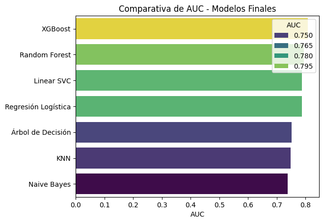
El análisis comparativo demuestra que los modelos basados en árboles de ensamblado (XGBoost y Random Forest) son los más eficaces para este conjunto de datos, destacando por su capacidad predictiva y estabilidad.
Por su parte, los modelos lineales (Linear SVC y Regresión Logística) mantienen un excelente equilibrio entre desempeño y eficiencia, siendo adecuados para contextos donde la interpretabilidad y el costo computacional son factores clave.
En cambio, Naive Bayes y KNN se destacan por su simplicidad y rapidez, pero su rendimiento es menor en términos de precisión y generalización.
Interpretación contextual del desempeño de los modelos#
En el contexto del estudio —la predicción de diabetes— el objetivo principal no es únicamente alcanzar la mayor precisión global, sino detectar correctamente la mayor cantidad posible de pacientes con la enfermedad (clase positiva).
Por tanto, las métricas de mayor relevancia son el Recall (Sensibilidad) y, en segundo lugar, el AUC, que mide la capacidad general del modelo para distinguir entre personas con y sin diabetes.
Al analizar los resultados:
Linear SVC y Regresión Logística obtuvieron los mayores valores de Recall (≈0.71), lo que significa que detectan correctamente alrededor del 71 % de los casos positivos.
Aunque su accuracy es menor que la de modelos más complejos, estos algoritmos lineales maximizan la detección de pacientes con diabetes, que es el objetivo prioritario en este tipo de problemas médicos.
Además, presentan una alta interpretabilidad, lo que permite identificar qué variables influyen más en el diagnóstico (por ejemplo, nivel de glucosa, presión sanguínea o índice de masa corporal).XGBoost y Random Forest alcanzaron AUC y Accuracy más altos (≈0.81 y 0.86, respectivamente), mostrando una excelente capacidad de discriminación y generalización.
Sin embargo, ambos tienden a clasificar con mayor precisión los casos negativos, sacrificando parte del recall (solo entre 0.23 y 0.38).
Esto puede implicar que algunos pacientes con diabetes no sean correctamente detectados, lo cual no es ideal en un contexto de salud pública donde los falsos negativos pueden tener consecuencias graves.Naive Bayes, aunque presenta baja precisión, logró el mayor Recall (0.83), lo que significa que identifica la gran mayoría de los casos positivos, pero con muchos falsos positivos.
En un entorno clínico, este modelo podría ser útil como modelo de cribado (screening), donde lo importante es no dejar pasar ningún caso sospechoso, aunque después se requiera una segunda validación con un modelo más específico.
En conjunto, se puede concluir que los modelos lineales (Regresión Logística y Linear SVC) representan la mejor alternativa para este tipo de estudio, ya que ofrecen un buen balance entre sensibilidad, interpretabilidad y estabilidad, mientras que XGBoost y Random Forest destacan cuando se busca máxima precisión global y robustez en la clasificación.
Conclusión general#
Si el objetivo es detectar el mayor número de pacientes con diabetes (minimizar falsos negativos) → Regresión Logística o Linear SVC son las mejores opciones.
Si se busca mayor exactitud global y robustez predictiva → XGBoost es el modelo más fuerte.
Si se requiere una herramienta rápida de detección preliminar → Naive Bayes podría emplearse como filtro inicial.
En resumen, para el problema analizado, los resultados son coherentes y adecuados, ya que los modelos alcanzan niveles de desempeño esperables en datos médicos reales: recall alto (~0.7–0.8), AUC sólido (~0.8) y generalización estable, cumpliendo con los objetivos del proyecto.